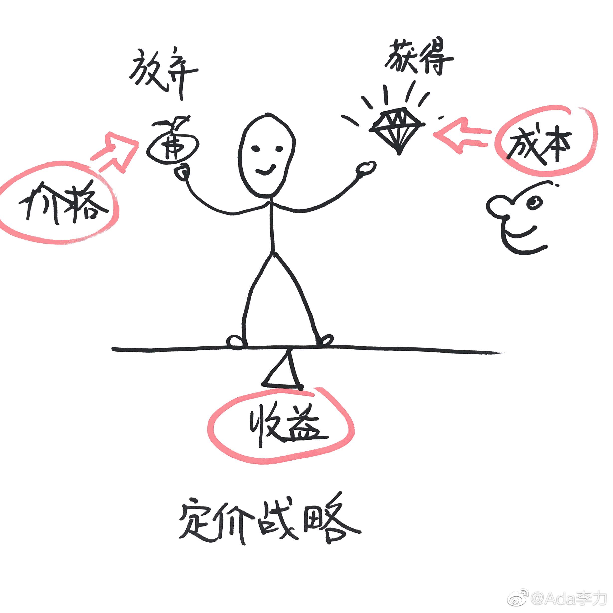

#创业#定价战略指的是三要素的组合。价格成本和收益。从顾客角度来讲收益是指，他用钱交换来的商品，值不值得？所以有个人说得很对，顾客买的不是产品，顾客买的是占便宜。用之前学到的视觉设计方法，来说明这个定价战略三要素，还是挺清晰的。以后要多画图。 
#创业#这些书买了很长时间，一直没兴趣看。最近感觉要把这一块的理论短板补足。国内很多市场营销理论实际上是从这些经典书里盗用原理，加上些中国特殊情况，或者自己阐释一番，就俨然以营销创新大师自居，还搞出很多冠以中国式的理论出来。没打算学习这些后后去揭穿别人什么，为的是自己要搞明白基础原理。不过说老实话，啃完这些大部头，我也有些犯怵，边学边思考边分享，应该是个不错的学习方法。
#创业# 护肤品是典型的经验型产品，就是用户在使用后才能够对产品作出评价，而护肤品更突出的特点是在于多次使用后仍然无法确定品质和效果，所以护肤品的营销才是重中之重。能采用高定价的护肤品品牌，基本上都做到了以下几点。- 用户可感知的广告。- 用户可感知到品质的包装。- 品牌能保证产品的品质。- 销售终端陈列的可感知性。
#创业#最近在看的书籍以教材和学术性居多，更容易理解了，为什么这些含金量更高的书籍让人望而生畏，普通人并不喜欢读。难读原因之一是有些内容确实难度大，比如经济学类的书籍里充斥着大量数学符号，据说书中每出现一个数学公式，读者就能少一半人。但更常见的原因是因为这类书要保证严谨性，所以把普通的一句话，说得复杂无比，句子搞得很难读，碰上国外的著作，再碰上不怎么样的翻译，句子就更难读懂了。很多畅销书实际上是把学术书里的基本原理，用普通用户能读懂或者是看得下去的语言，重新诠释了一遍。畅销书作者的收入，通常比学者的著作收入要高多了。虽然收入不说明作者的水平，但用户的付费至少说明了，把原来复杂拗口的话，说的更像口语，也是一种商业价值很高的能力。我以前还想培养自己，把话说严谨的习惯，现在觉得如果不走学术的道路，是没必要往那个方向去训练自己的。主要面向用户的话，还是说大白话比较好。学说话，侯宝林，郭德纲的相声都是很好的语言素材。